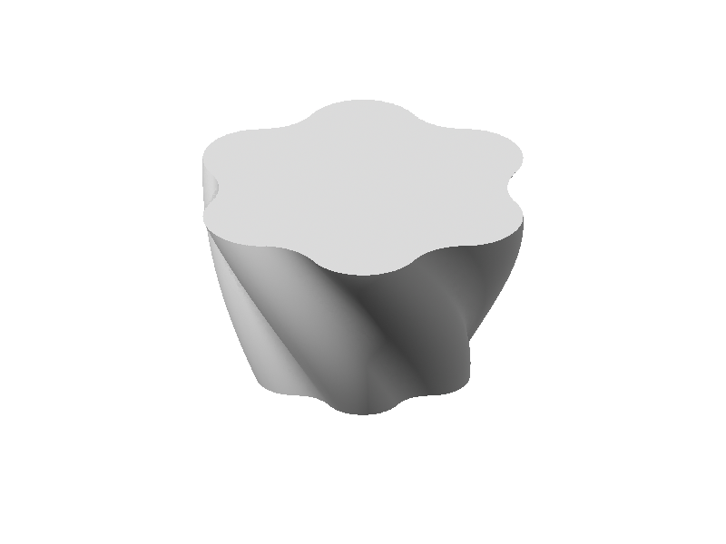
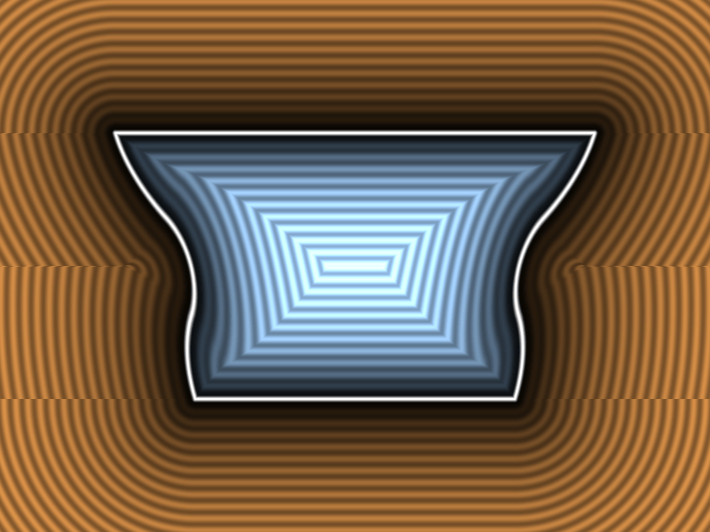

vase-practical
Drafted with AI, not yet reviewed
Vase on a hexagram rounded both ways, widening and turning a sixth as it rises.
Ported from src/vases/practical.scad.
- The profile is star(…, #{round}): the arcs that OpenSCAD’s offset(-r) offset(2 * r) offset(-r) draws with 72 facets to a circle, exactly, and folded, so it costs as much as one point of the star.
- OpenSCAD’s twist turns clockwise looking down and the loft’s angle anticlockwise, so the angle is negative.
- linear_extrude’s 25 slices are flat between them and the loft turns smoothly; the two are within 0.05 mm of each other.
Compared with the original: within 0.11 mm.



Files
Source
// SPDX-License-Identifier: 0BSD // // Vase on a hexagram rounded both ways, widening and turning a sixth as it // rises. // // Ported from `src/vases/practical.scad`. // - The profile is star(..., #{round}): the arcs that OpenSCAD's // offset(-r) offset(2 * r) offset(-r) draws with 72 facets to a circle, // exactly, and folded, so it costs as much as one point of the star. // - OpenSCAD's twist turns clockwise looking down and the loft's angle // anticlockwise, so the angle is negative. // - linear_extrude's 25 slices are flat between them and the loft turns // smoothly; the two are within 0.05 mm of each other. // // Compared with the original: within 0.11 mm. // --- Parameters --- const HEIGHT = 50.0; const RADIUS_BOTTOM = 40.0; const RADIUS_TOP = 60.0; const TURNS = 1.0 / 6.0; const ROUNDING = RADIUS_BOTTOM / 4.0; // --- Shape --- // Two triangles of circumradius RADIUS_BOTTOM, turned a sixth apart let profile = star(6, [RADIUS_BOTTOM, RADIUS_BOTTOM / sqrt(3.0)], #{round: ROUNDING}); let vase = loft([ #{z: 0, shape: profile}, #{z: HEIGHT, scale: RADIUS_TOP / RADIUS_BOTTOM, angle: -360.0 * TURNS}, ]); // --- Output --- bounds([-RADIUS_TOP, -RADIUS_TOP, 0.0], [RADIUS_TOP, RADIUS_TOP, HEIGHT]); draw(vase);